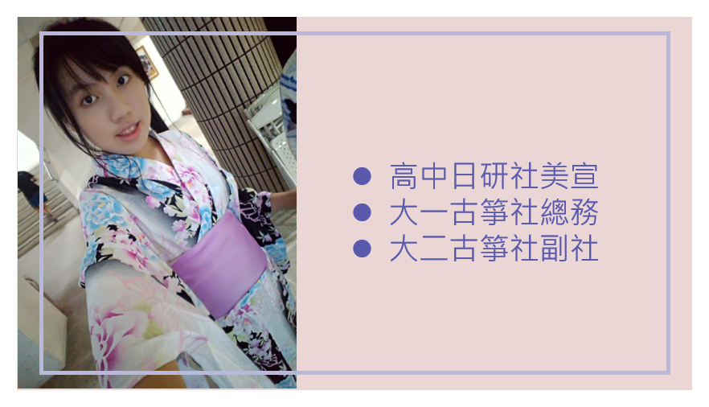
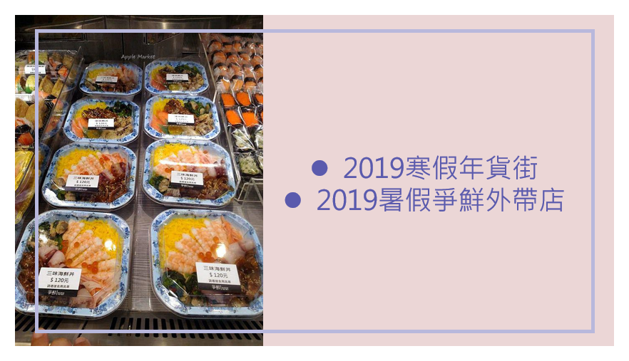

skills
語言能力
60%
文書能力
85%
Html / CSS
75%
C# / JAVA
65%
繪圖設計
80%
 |
Yen-Ling Liu #再不去闖，夢想永遠只會是一個夢想。 Phone : 0989-742-595 birth : 2000/07/12 E-mail:rurubg2000@gmail.com |
語言能力
60%
文書能力
85%
Html / CSS
75%
C# / JAVA
65%
繪圖設計
80%

我們這組選擇和中原幼兒園合作，利用課餘時間去輔導孩子，陪伴他們上課、協助圖書歸檔和照顧孩子等工作。
我們這組所架設的購物網站，網站內容主要為販售高質感的文具和生活用品，有完整的購物網站結構。主要使用JSP/MySQL。
|  |  |